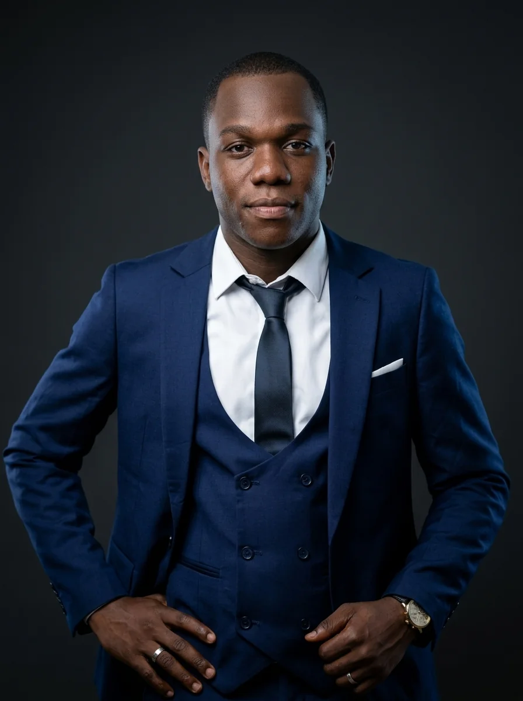

Je construis des applications web et les réseaux qui les font tourner.

La lumière voyage dans 9 µm de verre.
C'est là que j'ai commencé. En 2022, chez Premium Company Bénin, je raccordais des abonnés en fibre optique : soudure, pose, puis une mesure au réflectomètre pour valider chaque liaison. En 2023, à la SoBAPS (Ministère de la Santé), j'ai assuré la maintenance de réseaux de surveillance.
Le signal entre chez le client.
Le connecteur SC/APC vert se branche sur la box optique (ONT). Le voyant LOS s'éteint, PON s'allume : la liaison est établie. Derrière la box, je monte le réseau local, les VLAN, la téléphonie IP et les tunnels VPN chiffrés.
LOS · pas de signal optique
Un centre d'appels dans une main.
Un agent vocal IA qui décroche et répond. La téléphonie tient sur un Raspberry Pi 3 Model B, relié à un serveur par un tunnel chiffré. Mon projet de fin d'études.
- PROCESSEURAsterisk 22 recompilé · PJSIP/ARI
- PORT ETHERNETTunnel WireGuard → serveur IAWhisper écoute · LLaMA 3.3 répond · ElevenLabs parle
- CARTE microSDDebian · transfert SFTP
La fibre se divise en projets.
Touchez ou survolez un écran pour l'ouvrir.
- PitchMySiteSaaS · visuels de présentation→
- Al KareemE-commerce · 68 → 90+ en 3G→
- Fleet CommanderSaaS · gestion de flotte↗
- NetWave StudioMon studio · depuis 2023↗


Le signal est arrivé.
Un poste, une mission ou un projet : je réponds sous 24 h ouvrées.
- Licence Pro Réseaux & Télécoms · 2026
- Cisco NetAcad · Networking, Cybersecurity
- 8 projets · 5 sites en ligne
Du câble à l'interface.
Les 7 couches du modèle OSI. Survolez-en une : voici ce que je fais à ce niveau, et le projet qui le prouve.